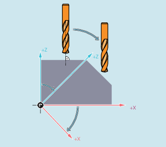
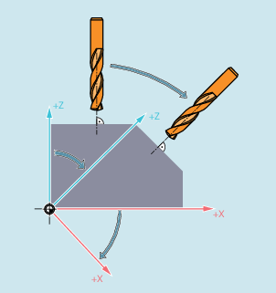

Freigabe
Die Freigabe der Werkzeugradiuskorrektur für Konturwerkzeuge erfolgt kanalspezifisch über:
MD28290 $MC_MM_SHAPED_TOOLS_ENABLE
Werkzeugtyp
Die Werkzeugtypen von Konturwerkzeugen werden kanalspezifisch festgelegt über:
MD20370 $MC_SHAPED_TOOL_TYPE_NO
Schneiden
Jedem Konturwerkzeug können in beliebiger Reihenfolge eine Anzahl Schneiden (D-Nummern) zugeordnet werden. Die maximale Anzahl von Schneiden pro Werkzeug wird parametriert über:
MD18106 $MN_MM_MAX_CUTTING_EDGE_PERTOOL
Die erste Schneide eines Konturwerkzeugs ist die Schneide, die bei der Aktivierung des Werkzeugs angewählt wird. Wird z. B. in einem Programm durch die Befehle T3 D5 die fünfte Schneide (D5) des dritten Werkzeugs (T3) aktiviert, dann definiert D5 und die nachfolgenden Schneiden entweder mit einem Teil oder alle zusammen das Konturwerkzeug. Die vor D5 liegenden Schneiden werden ignoriert.
Wird ein Frame programmiert, der eine Drehung enthält, wird bei CUT2D bzw. CUT2DD die Ebene, in der die Werkzeugradiuskorrektur (Korrekturebene) stattfindet, nicht mitgedreht. Die Werkzeugradiuskorrektur wird bezogen auf die nicht gedrehte Arbeitsebene (G17, G18, G19) eingerechnet. Die Werkzeuglängenkorrektur wirkt relativ zur Korrekturebene.
Für die Bearbeitung von schrägen Flächen müssen die Werkzeugkorrekturwerte entsprechend definiert oder unter Einsatz der Funktionalitäten zur "Werkzeuglängenkorrektur für orientierbare Werkzeuge" berechnet werden.
Wird ein Frame programmiert, der eine Drehung enthält, wird bei CUT2DF bzw. CUT2DFD die Ebene, in der die Werkzeugradiuskorrektur (Korrekturebene) stattfindet, mitgedreht. Die Werkzeugradiuskorrektur wird bezogen auf die gedrehte Arbeitsebene (G17, G18, G19) eingerechnet. Die Werkzeuglängenkorrektur wirkt aber weiterhin relativ zur nicht gedrehten Arbeitsebene.
Voraussetzung: An der Maschine muss die Werkzeugorientierung senkrecht zur gedrehten Arbeitsebene einstellbar sein und zur Bearbeitung eingestellt werden.
| Hinweis |
Die Werkzeuglängenkorrektur wirkt weiterhin relativ zur nicht gedrehten Arbeitsebene. |
Das An- bzw. Abfahrverhalten bei aktiver Werkzeugradiuskorrektur in Fällen, in denen der Aktivierungs- bzw. Deaktivierungssatz keine Verfahrinformation enthält (nur bei 2½ D-Werkzeugradiuskorrektur mit CUT2D bzw. CUT2DF), wird festgelegt mit dem Settingdatum:
SD42494 $SC_CUTCOM_ACT_DEACT_CTRL
Es ist folgendermaßen dezimal kodiert:
Tausenderstelle (103) | Hunderterstelle (102) | Zehnerstelle (101) | Einerstelle (100) |
|---|---|---|---|
Abfahrverhalten | Abfahrverhalten | Anfahrverhalten | Anfahrverhalten |
1) Werkzeuge mit Schneidenlage sind Werkzeuge mit Werkzeugnummern zwischen 400 und 599 (Dreh- und Schleifwerkzeuge), deren Schneidenlage einen Wert zwischen 1 und 8 hat. Dreh- und Schleifwerkzeuge mit Schneidenlage 0 oder 9 bzw. anderen, nicht definierten Werten, werden wie Fräswerkzeuge behandelt. | |||
Enthält die maßgebliche Stelle eine 1, wird immer an- bzw. abgefahren, auch dann, wenn G41/G42 bzw. G40 alleine im Satz steht.
Beispiel:
| N100 X10 Y0 | |
| N110 G41 | |
| N120 X20 |
Wird in dem Beispiel ein Werkzeugradius von 10 mm angenommen, wird im Satz N110 auf die Position X10 Y10 verfahren.
Enthält die maßgebliche Stelle eine 2, wird nur dann an- bzw. abgefahren, wenn im Aktivierungs-/Deaktivierungssatz mindestens eine Geometrieachse programmiert ist. Will man mit dieser Einstellung das gleiche Ergebnis wie im Beispiel oben erreichen, muss das Programm deshalb z. B. wie folgt geändert werden:
| N100 X10 Y0 | |
| N110 G41 X10 | |
| N120 X20 |
Fehlt die Achsangabe X10 im Satz N110, wird die Aktivierung der Werkzeugradiuskorrektur um einen Satz verzögert, d. h., der Aktivierungsatz wäre der Satz N120.
Enthält die maßgebliche Stelle eine 3, wird in einem Deaktivierungssatz (G40) nicht abgefahren, falls nur die Geometrieachse senkrecht zur Korrekturebene programmiert ist. In diesem Fall wird zunächst die Bewegung senkrecht zur Korrektureben ausgeführt. Anschließend folgt die Abfahrbewegung in der Korrekturebene. In diesem Fall muss der Satz nach G40 eine Bewegungsinformation in der Korrekturebene enthalten. Die Anfahrbewegungen für die Werte 2 und 3 sind identisch.
Enthält die maßgebliche Stelle eine 4 (nur im Fall eines Werkzeugs ohne Schneidenlage beim Abfahren, d. h. die Tausenderstelle), wird für einen Deaktivierungssatz, falls dort keine Bewegung programmiert wurde, die nächste programmierte Bewegung genommen.
Beispiel:
| N1040 G41 T1 D1 | |
| N1050 X20 | |
| N1060 X30 | |
| N1070 X50 | ; Korrektur aktiv |
| N1080 UP | |
| N1090 X70 F10000 | ; Korrektur herausfahren mit F10000 |
| N1100 G01 | |
| N1110 G90 | |
| N1120 X90 F12000 | |
| N1130 X100 | |
| N1140 M30 |
| N2000 PROC UP | |
| N2010 G40 | |
| N2030 RET |
Enthält die maßgebliche Stelle eine andere Zahl als 1, 2 oder 3, also insbesondere den Wert 0, wird in einem Satz, der keine Verfahrinformation enthält, nicht an- bzw. abgefahren.
| Hinweis |
Werkzeuge mit SchneidenlageWird der Wert dieses Settingdatums innerhalb eines Programmes verändert, so empfiehlt es sich, vor dem Beschreiben einen Vorlaufstopp (STOPRE) zu programmieren, da sonst die Gefahr besteht, dass in davor liegenden Programmteilen der neue Wert verwendet wird. Der umgekehrte Fall ist unkritisch. D.h., wird das Settingdatum beschrieben, greifen nachfolgende NC-Sätze mit Sicherheit auf den geänderte Wert zu. |